🚀 0a. How to start with Xcode for SwiftUI
Step 1: Open Xcode
Description: Launch Xcode from Applications or using Spotlight Search to begin creating your SwiftUI project.
Instruction: Press Command + Space to open Spotlight Search, type "Xcode", and click on Xcode to launch the application. Alternatively, find Xcode in your Applications folder.

Step 2: Create a New Project
Description: Start a new Xcode project from the welcome screen to begin your SwiftUI development.
Instruction: From the Xcode welcome screen, click "Create a new Xcode project". If Xcode is already open, you can also use File > New > Project from the menu bar.

Step 3: Choose iOS App Template
Description: Select the appropriate template for iOS SwiftUI app development.
Instruction: In the template selection screen, make sure the "iOS" tab is selected at the top, then choose the "App" template from the Application section. Click "Next" to continue.

Step 4: Configure Project Settings
Description: Set up your project details and ensure SwiftUI is selected as the interface framework.
Instruction: Fill in the project configuration:
- Product Name: Enter your app name (e.g., "MyFirstApp")
- Team: Select your development team (if available)
- Organization Identifier: Use reverse domain notation (e.g., com.yourname.myfirstapp)
- Bundle Identifier: Auto-generated based on organization identifier and product name
- Language: Swift
- Interface: SwiftUI (Important! Make sure this is selected)
- Use Core Data: Leave unchecked for beginners
- Include Tests: Can be unchecked for simple projects
Click "Next" when all settings are configured.

Step 5: Choose Project Location
Description: Select where to save your project on your Mac and set up version control.
Instruction: Choose a location to save your project (Desktop or Documents folder recommended). Ensure "Create Git repository on my Mac" is checked for version control. Click "Create" to finish setting up your project.

Step 6: Understand the Xcode Interface
Description: Familiarize yourself with the Xcode workspace layout for SwiftUI development.
Instruction: The Xcode interface consists of several key areas:
- Navigator Area (Left): Browse project files, folders, and resources
- Editor Area (Center): Write and edit your SwiftUI code
- Canvas (Right): Live preview of your SwiftUI interface
- Inspector Area (Far Right): View and modify properties and settings
- Debug Area (Bottom): Console output and debugging tools
- Toolbar (Top): Build, run, and stop controls

Step 7: Enable Canvas Preview
Description: Activate the live preview feature to see your SwiftUI code changes in real-time.
Instruction: In the Canvas area (right side), click the "Resume" button to start the live preview. If the Canvas is not visible, go to Editor > Canvas in the menu bar to show it. The preview will update automatically as you modify your SwiftUI code.

Step 8: Run Your First App
Description: Build and run your default SwiftUI app in the iOS Simulator to see it in action.
Instruction: Click the Play button (▶️) in the toolbar or press Command + R to build and run your app. Xcode will launch the iOS Simulator and display your app. The default app shows "Hello, world!" text - this confirms your SwiftUI project is working correctly.

🖼️ 0b. How to add images with Image Scale Factors (1x, 2x, 3x) in Xcode
Step 1: Prepare Your High-Resolution Image
Description: Start with the highest resolution version of your image. A larger image can be scaled down without losing quality, so it's best to start with an image that is at least 3x the final display size.
Instruction: Create or obtain a high-quality image. For example, if you want your image to be 100x100 points on the screen, your source image should be at least 300x300 pixels.

Step 2: Generate Image Set with an Online Tool
Description: Use a tool to automatically generate the 1x, 2x, and 3x versions of your image. This saves time and ensures the images are correctly sized.
Instruction: Go to appicon.co and scroll down to the "Image Sets" section. Drag your high-resolution image into the drop zone. The tool will generate a zip file containing the 1x, 2x, and 3x images. Download and unzip the file.
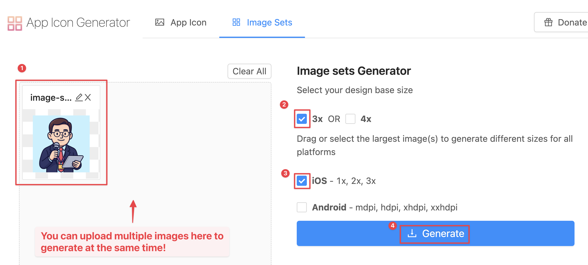Step 3: Add a New Image Set in Xcode
Description: Create a new image set in your project's Asset Catalog to hold the different scale factors of your image.
Instruction: In Xcode, open your Assets.xcassets file. Click
the "+" button at the bottom and select "Image Set". Give the new image set a descriptive
name (e.g., "my-awesome-image").
Step 4: Drag and Drop Generated Images
Description: Add the generated 1x, 2x, and 3x images to the corresponding slots in the image set.
Instruction: Drag the image.png (1x), image@2x.png
(2x), and image@3x.png (3x) files from the unzipped folder into the respective
1x, 2x, and 3x placeholders in the Xcode image set.
Step 5: Use the Image in SwiftUI
Description: Use the image in your SwiftUI code by referencing the name of the image set. SwiftUI will automatically select the correct image based on the device's screen resolution.
Instruction: In your SwiftUI view, use
Image("my-awesome-image") to display the image. You don't need to specify the
scale factor; the system handles it for you.
struct ContentView: View {
var body: some View {
Image("my-awesome-image")
.resizable()
.scaledToFit()
.frame(width: 100)
}
}🎨 0c. How to add color with Color Set in Xcode
Step 1: Open the Asset Catalog
Description: Navigate to the Asset Catalog (Assets.xcassets)
where you manage all your project's images, colors, and other resources.
Instruction: In the Project Navigator on the left side of Xcode, click on
the Assets.xcassets file. This will open the asset editor.
Step 2: Create a New Color Set
Description: Add a new Color Set to your assets. This will allow you to define a custom color that can be reused throughout your app.
Instruction: At the bottom of the asset editor, click the "+" button and select "Color Set" from the dropdown menu.
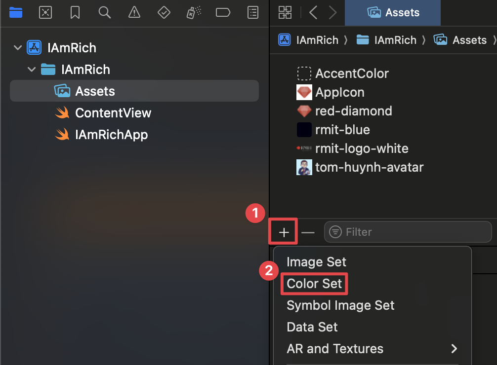Step 3: Name and Configure the Color
Description: Give your new color a descriptive name and choose the color value. You can set different colors for light and dark mode.
Instruction: Select the new color set. In the Inspector on the right, give it a name (e.g., "BrandPrimary"). Click on the color swatch for "Any Appearance" to open the color picker and choose your desired color.
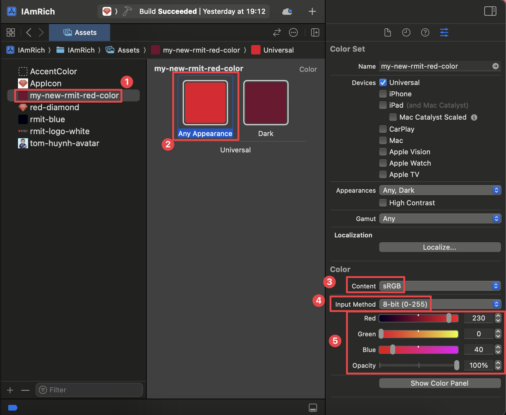Step 4: Use the Color Set in SwiftUI
Description: Once defined, you can easily use your custom color in your SwiftUI views by referencing its name.
Instruction: In your SwiftUI code, use Color("YourColorName")
to apply the custom color. For example, Color("BrandPrimary").
struct ContentView: View {
var body: some View {
ZStack {
Color("BrandPrimary")
.ignoresSafeArea()
Text("Hello, Color Sets!")
.foregroundColor(.white)
}
}
}✍️ 0d. How to add a custom font in SwiftUI on Xcode
Step 1: Choose and Download Your Font
Description: Find and download a custom font to use in your app. Google Fonts is a great resource for free, high-quality fonts.
Instruction: Go to fonts.google.com, choose a font you like, and download the font family. Unzip the downloaded file to find the .ttf or .otf font files.
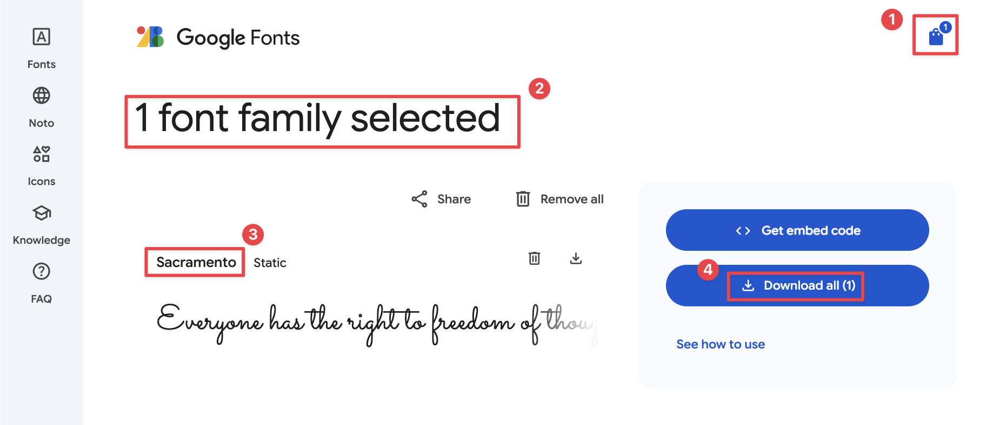Step 2: Install the fonts with Font Book
Description: Before using a custom font in your app, you need to install it on your Mac using Font Book. This makes the font available to the system and allows you to verify its details.
Instruction: Locate the .ttf or .otf font file you downloaded and double-click it. Font Book will open and display a preview of the font. Click the "Install Font" button to add it to your system's font library.
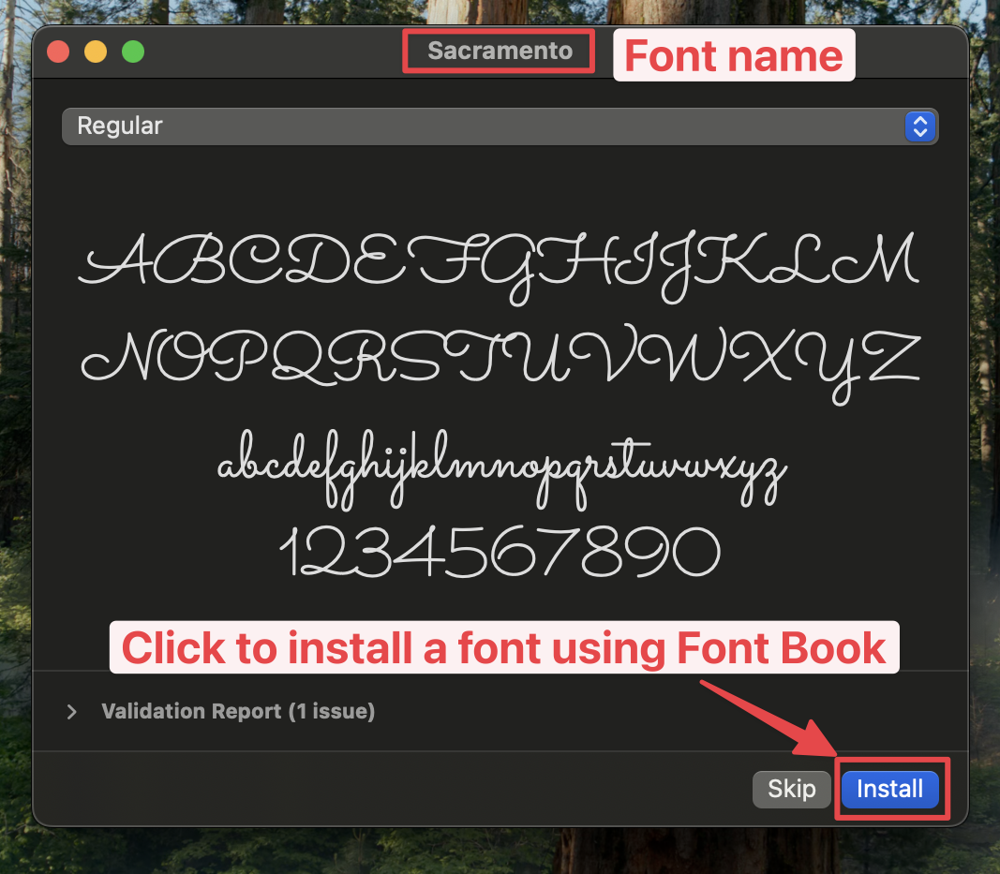Step 3: Check the PostScript Name in Font Book
Description: To use a custom font in SwiftUI, you need its PostScript name, which may be different from the file name. You can find this name in Font Book.
Instruction: In Font Book, select the font you just installed. Click the "Info" button (i) in the toolbar. Look for the "PostScript name" field. This is the exact name you will use in your code.
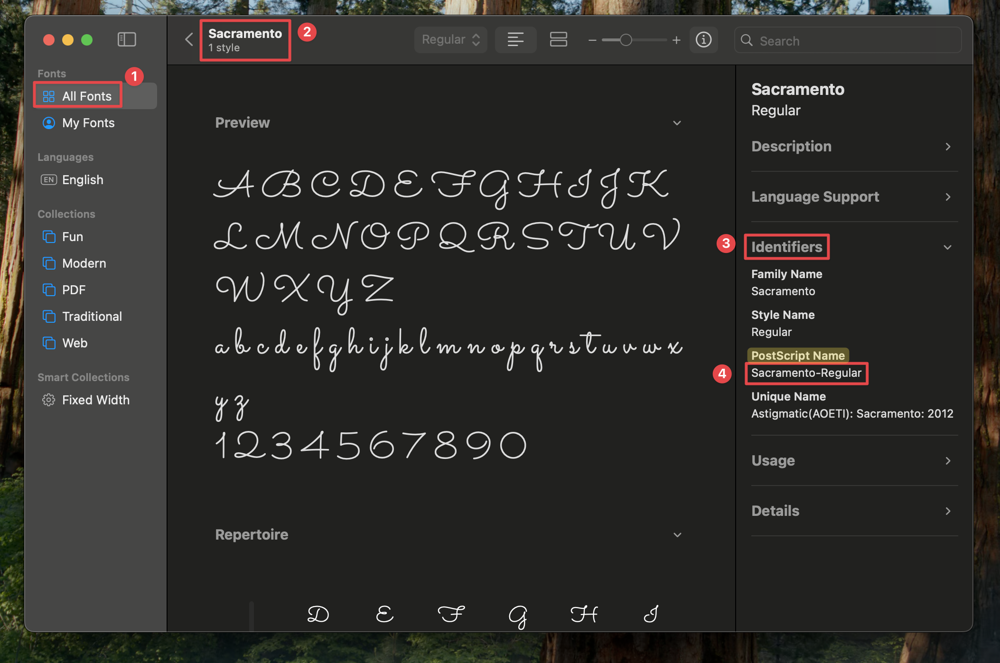Step 4: Add Font Files to Your Xcode Project
Description: Import the font files into your Xcode project and ensure they are included in the target.
Instruction: Drag the .ttf or .otf font files into the Project Navigator in Xcode. In the dialog that appears, make sure to check "Copy items if needed" and select your app's target in the "Add to targets" section.
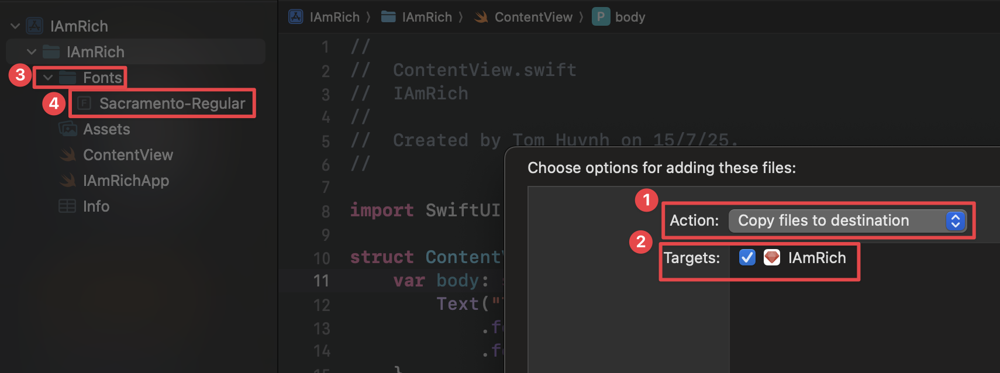Step 5: Register the Font in Info.plist
Description: Inform your app about the custom fonts by adding an entry to
the Info.plist file.
Instruction: In the Project Navigator, select your project file, go to the Info tab. Click the "+" button to add a new key, and select "Fonts provided by application". Expand this new array and add a new item for each font file you added (e.g., "YourFont-Regular.ttf").
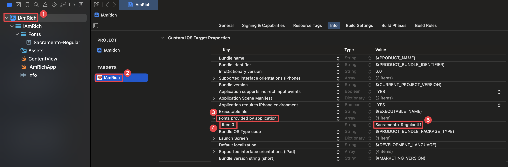Step 6: Use the Font in SwiftUI
Description: Apply your custom font to Text views in your
SwiftUI code using the .font() modifier.
Instruction: Use the .font(.custom("FontName", size: 24))
modifier on a Text view. The "FontName" should be the PostScript name of the
font, which you can find by opening the font file in Font Book on your Mac.
struct ContentView: View {
var body: some View {
Text("This is my custom font!")
.font(.custom("YourFont-Regular", size: 24))
}
}📱 0e. How to deploy your app on an actual physical iPhone/iPad with Xcode
Step 1: Connect Your iPhone/iPad to Your Mac
Description: Connect your physical iOS device to your Mac using a USB cable to begin the deployment process.
Instruction: Use a Lightning or USB-C cable to connect your iPhone or iPad directly to one of your Mac's USB ports.
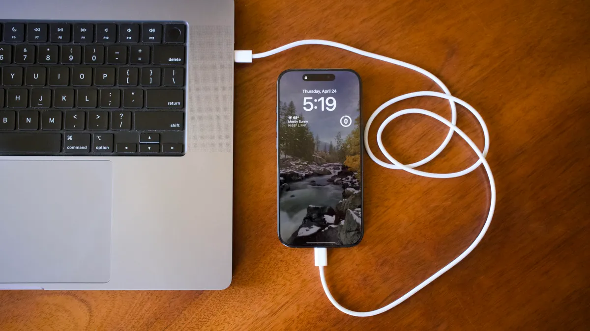Step 2: Select Your Device as the Run Destination
Description: In Xcode, choose your connected device from the list of available run destinations.
Instruction: In the Xcode toolbar, click on the device/simulator dropdown (it might currently show an iOS Simulator). Your connected iPhone or iPad should appear at the top of the list. Select it.
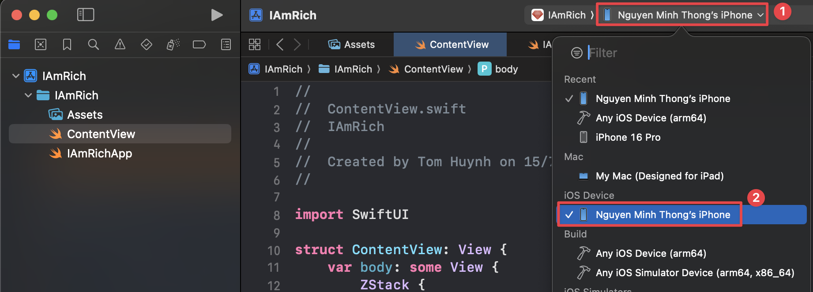Step 3: Trust the Computer on Your Device
Description: Establish a trusted relationship between your iOS device and your Mac to allow Xcode to install and debug apps.
Instruction: Unlock your iPhone or iPad. A prompt will appear asking whether to "Trust This Computer?". Tap "Trust" and enter your device passcode if prompted.
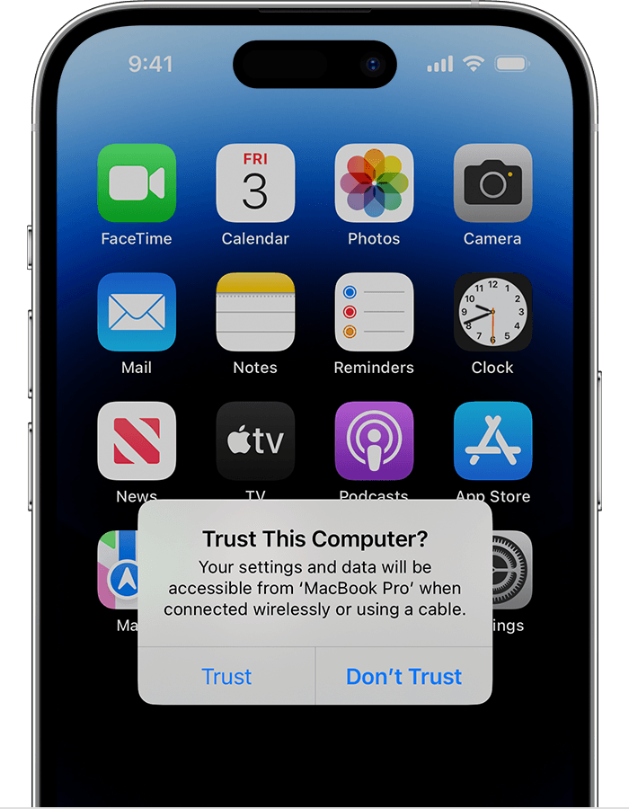Step 4: Add Your Apple Developer Account to Xcode
Description: Sign in with your Apple ID in Xcode to manage development teams and provisioning profiles. A free Apple ID is sufficient for testing on your own devices.
Instruction: In Xcode, go to Xcode > Settings... (or Preferences...). Click on the Accounts tab. Click the + button in the bottom-left corner, select "Apple ID", and sign in with your credentials.
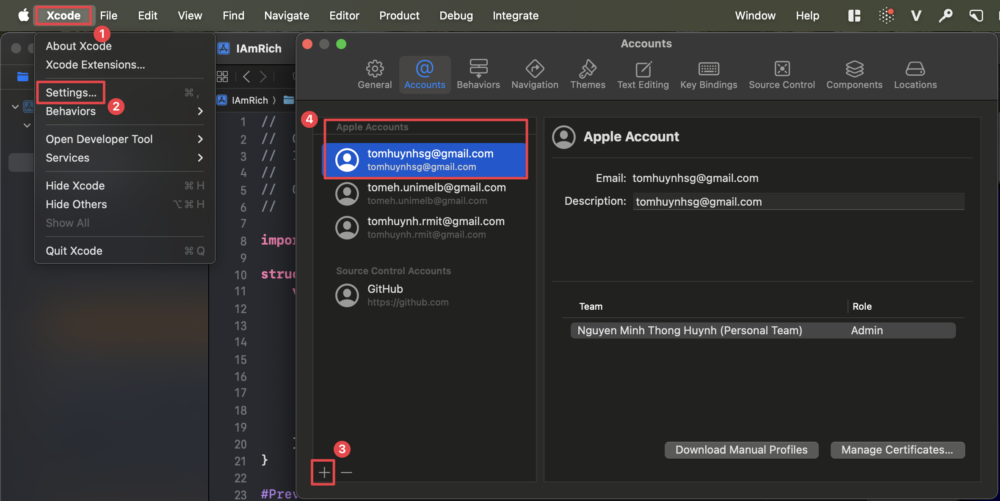Step 5: Assign a Team to Your Project
Description: Associate your project with your developer account to allow Xcode to automatically manage the signing process.
Instruction: In the Project Navigator, select the top-level project file. Go to the Signing & Capabilities tab. From the "Team" dropdown, select the personal team associated with your Apple ID. Xcode may show a status message like "Xcode will create and update a provisioning profile."
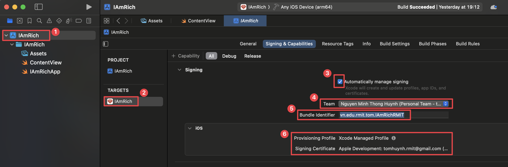Step 6: Build and Run the App
Description: Deploy and launch your app on your connected physical device.
Instruction: Click the Play button (▶️) or press Command + R. Xcode will build the app and install it on your device.
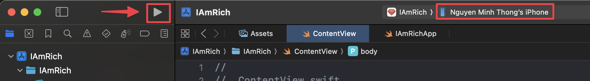Step 7: Trust the Developer on Your Device
Description: The first time you run an app from a new developer account, you must manually trust the developer in your device's settings.
Instruction: On your iPhone/iPad, go to Settings > General > VPN & Device Management. Under the "Developer App" section, tap on your developer app certificate and then tap "Trust". After this, the app will be able to launch.
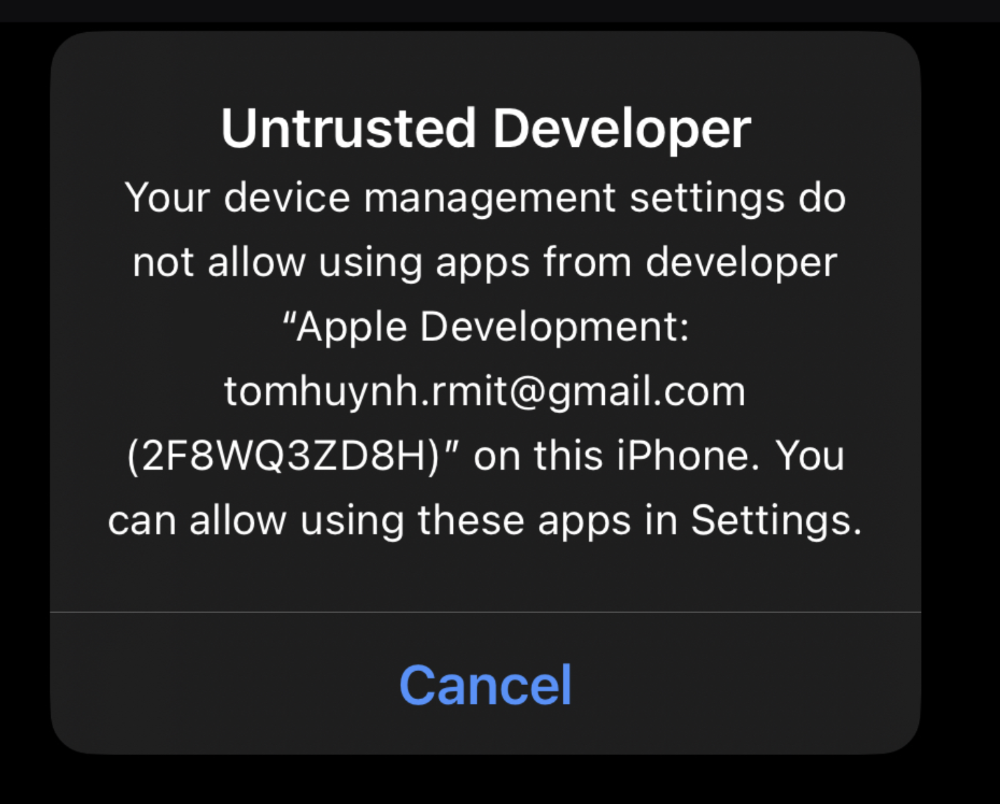 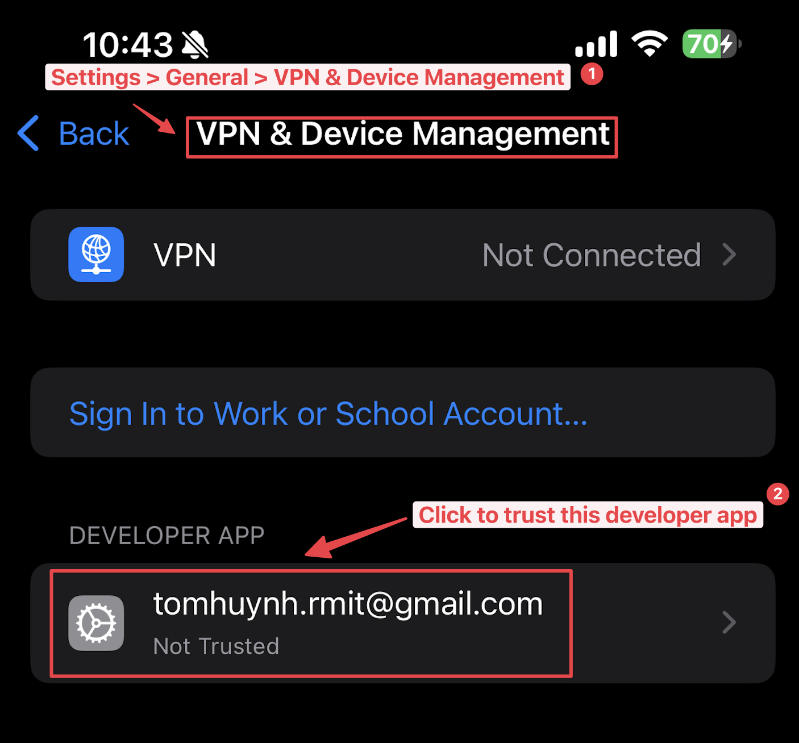 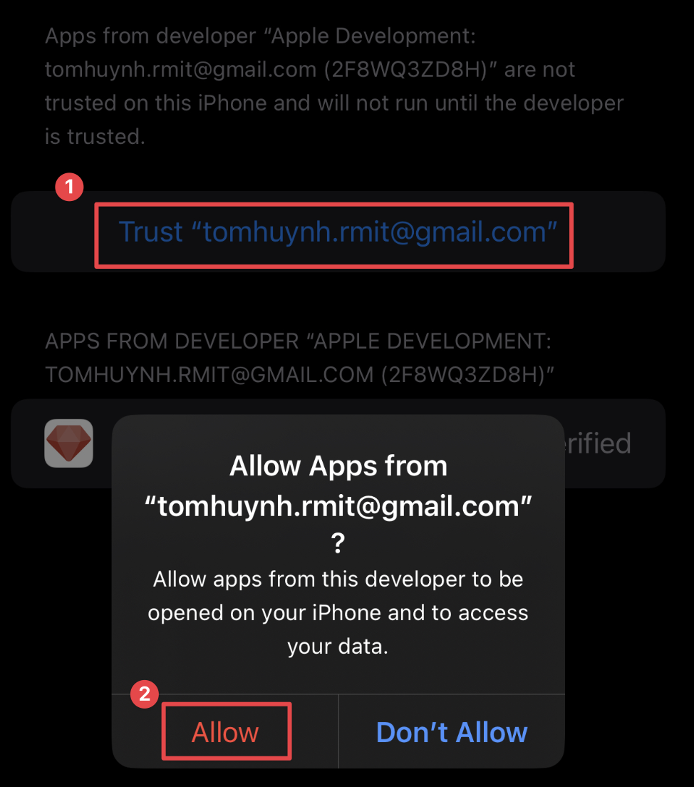📸 0f. How to Screenshot Your App with an iPhone Frame
Step 1: Take a Screenshot in the Simulator
Description: Open your app in the iPhone Simulator and use the built-in screenshot functionality. Note that the simulator screenshot will not include the iPhone device frame, which is expected behavior.
Instruction: With your app running in the simulator, navigate to File > New Screen Shot in the menu bar, or use the keyboard shortcut Cmd + S. The screenshot will be saved to your desktop.

Step 2: Add an iPhone Frame with Mockuphone
Description: To create a more professional-looking image, you can add a device frame to your screenshot using a free online tool like Mockuphone.
Instruction: Go to mockuphone.com. Select the iPhone model that matches the one you used in the Xcode simulator. For example, if you used the iPhone 12 mini, select that model on the website.

Step 3: Upload and Download Your Framed Screenshot
Description: Upload your screenshot to Mockuphone to have it automatically placed within the selected iPhone frame.
Instruction: Follow the website's instructions to upload the screenshot you took in Step 1. Once processed, you can download the final image, which will now feature your app within a realistic iPhone frame.

🐙 0g. How to integrate Github with Xcode
Step 1: Navigate to Personal Access Tokens
Description: To connect Xcode with your GitHub account, you first need to navigate to the Personal Access Token section in your GitHub settings.
Instruction:
- Click your profile icon in the top-right corner and select Settings.
- In the left sidebar, scroll down and click on Developer settings.
- Select Personal access tokens, then choose Tokens (classic).
- Click the "Generate new token" dropdown and select Generate new token (classic).

Step 2: Generate a New Personal Access Token
Description: Create a new token with the specific permissions (scopes) that Xcode needs to interact with your GitHub account and repositories.
Instruction:
- Click "Generate new token."
- Give your token a descriptive name (e.g., "My Xcode Token") and set an expiration date (e.g., 90 days).
- In the "Select scopes" section, check the boxes for the following permissions: repo, admin:public_key, user, and write:discussion.
- Click "Generate token" at the bottom of the page.
- Important: Copy the generated token to a safe place immediately. You will not be able to see it again.
Step 3: Add Personal Access Token to Xcode
Description: Add your GitHub account to Xcode using the personal access token you just created.
Instruction: In Xcode, go to Xcode > Settings... > Accounts. Click the "+" button, select "GitHub," and sign in using your GitHub username and the personal access token as the password.
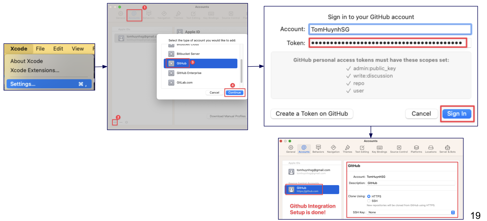Step 4: Create a New Project to Test GitHub Integration
Description: When creating a new project, you can either create a new GitHub repository or clone an existing one.
Instruction:
- Option A: Create a new GitHub repo from a local project: When creating
your project, ensure "Create Git repository on my Mac" is checked. After the project
opens, go to the Source Control navigator (the second icon in the left sidebar).
Right-click the "Remotes" folder and select "New
[Your Project Name]Remote...". In the pop-up window, you can set the repository name, description, and visibility, then click "Create" to publish your local project to GitHub. - Option B: Link a local project to an existing GitHub repo: If you have an existing local project with Git, you can link it to a remote repository. In the Source Control navigator, right-click the "Remotes" folder, select "Add Existing Remote...", and paste your repository's HTTPS URL.


Step 5: Commit and Push Changes from Xcode
Description: After making changes to your code, you can commit them to your local repository and push them to GitHub to keep your project synchronized.
Instruction:
- After modifying a file, go to Source Control > Commit... in the menu bar.
- In the commit window, you can review the changes, select the files you want to include, and write a meaningful commit message describing your updates.
- To commit and push simultaneously, check the "Push to remote" box and click "Commit and Push."
- Alternatively, you can commit locally first and then push separately by going to Source Control > Push....
🎓 1. Swift & SwiftUI Fundamentals
1. Displaying Static Text
The Text() view is used to display simple, non-changing text on the screen.
struct ContentView: View {
var body: some View {
Text("Hello there")
}
}2. Storing and Displaying Data (Constants)
Use let to create a constant to store data that doesn't change. You can then
display this data using a Text view.
struct ContentView: View {
let name = "Tom"
var body: some View {
Text(name)
}
}3. String Interpolation
Mixing text and data using \(...).
struct ContentView: View {
let name = "Tom"
var body: some View {
Text("My name is \(name)")
}
}4. Variable & Constant
A constant (let) cannot be changed, while a variable (var) can be.
struct ContentView: View {
let name = "Tom" // Constant (cannot be changed)
var score = 10 // Variable (can be changed)
var body: some View {
Text("My name is \(name) and my score is \(score)")
}
}5. Basic Data Types
Working with text (String), numbers (Int, Double), and true/false values (Bool).
struct ContentView: View {
let name = "Tom"
let score = 10
let height = 1.75
var isStudent = false
var body: some View {
Text("My name is \(name) and my score is \(score). My height is \(height)")
if (isStudent){
Text("I'm a student")
} else {
Text("I'm not a student")
}
if (score > 5) {
Text("I am good!")
} else {
Text("You are bad!")
}
}
}6. Array & Random Elements
Storing a collection of items in an Array and picking a random one.
struct ContentView: View {
let fruits = ["Apple", "Banana", "Cherry"]
var body: some View {
VStack {
Text("My random fruit is below:")
Text(fruits.randomElement() ?? "No fruit!")
}
}
}7. Image("imageName")
Displays an image from your project's "Assets" folder.
struct ContentView: View {
var body: some View {
Image("avatar-1")
}
}8. Add some modifiers for images
.resizable(): Allows the image to be resized.
.scaledToFit(): Scales the image to fit its container while maintaining its
aspect ratio.
.frame(width: 300): Sets a fixed width for the image.
struct ContentView: View {
var body: some View {
Image("avatar-1")
.resizable()
.scaledToFit()
.frame(width: 300)
}
}9. Image(systemName: "...")
Displays an icon from Apple's SF Symbols library.
struct ContentView: View {
var body: some View {
Image(systemName: "heart.circle.fill")
.font(.largeTitle)
.foregroundColor(.blue)
}
}10. VStack
Use VStack to arrange views in a vertical line, one on top of the other, like
stacking blocks.
struct ContentView: View {
var body: some View {
VStack {
Text("Item 1")
Text("Item 2")
Text("Item 3")
}
}
}11. HStack
Stacks views horizontally. Good for icons next to text.
struct ContentView: View {
var body: some View {
HStack {
Image(systemName: "star.fill")
Text("My Hobby")
Text("is Basketball")
}
}
}12. Spacer
A Spacer is a flexible, invisible view that pushes other views as far apart as
possible.
struct ContentView: View {
var body: some View {
HStack {
Text("Start")
Spacer()
Text("End")
}
}
}13. ZStack
Layers views on top of each other. Useful for backgrounds.
struct ContentView: View {
var body: some View {
ZStack {
Color.purple
Text("Content on Top")
}
}
}14. Combining Layouts
VStack, HStack, ZStack, and Spacer can be nested and combined to create complex user interfaces. This example shows a card-like structure.
struct ContentView: View {
var body: some View {
ZStack {
Color.green
VStack(alignment: .leading) {
HStack {
Image(systemName: "star.fill")
.foregroundColor(.yellow)
Text("Featured Item")
.font(.headline)
Spacer() // Pushes content left
}
Text("This item uses ZStack, VStack, HStack, and Spacer.")
.font(.caption)
}
.padding() // Padding inside the VStack
}
.frame(width: 250, height: 150) // Frame for ZStack
}
}15. State & Actions
Use @State to store a value that can change. A Button can change
that value, and SwiftUI will automatically update the view.
struct ContentView: View {
@State var tapCount = 0
var body: some View {
VStack {
Text("Taps: \(tapCount)")
Button("Tap Me") {
tapCount += 1
}
}
}
}16. onTapGesture { ... }
Makes any view tappable. Code inside the curly braces runs on tap.
struct ContentView: View {
@State var tapCount = 0
var body: some View {
VStack {
Text("Taps: \(tapCount)")
Image("avatar-1")
.onTapGesture {
tapCount += 1
}
}
}
}17. Animation
Smoothly animates changes with withAnimation() when the watched
@State variable updates.
struct ContentView: View {
@State var tapCount = 0
var body: some View {
VStack {
Text("Taps: \(tapCount)")
Image("avatar-1")
.onTapGesture {
withAnimation(.easeInOut(duration: 2)) {
tapCount += 1
}
}
}
}
}🏗️ 2. Building the Static User Interface
Building the Profile View
Step 0: Add a background color
Use a ZStack to layer a Color view behind all other content,
setting a base for the UI. The .ignoresSafeArea() modifier is added to make the
color extend to the edges of the screen.
ZStack {
Color.mint
.ignoresSafeArea()
}Step 1: Create a core profile (Image & Text)
Combine an Image and Text views within a VStack to
form the main profile section. Apply modifiers to style the avatar image as a circle and
format the name and title text.
VStack {
Image("avatar-3")
.resizable()
.scaledToFit()
.frame(width: 140)
.clipShape(Circle())
VStack {
Text("Tom Huynh")
.font(.system(size: 32, weight: .bold))
.foregroundColor(.black)
Text("iOS Developer")
.font(.headline)
.foregroundColor(.red)
}
}Step 2: Add a Magic Ball over the top of the profile
Overlay a 'magic ball' image on top of the profile avatar using a ZStack to
create a layered visual effect.
ZStack {
Image("avatar-3")
.resizable()
.scaledToFit()
.frame(width: 140)
.clipShape(Circle())
Image("magic-ball-empty")
.resizable()
.scaledToFit()
.frame(width:550)
}Step 3: Add Phone number and Email
Display contact information using ZStacks to layer HStacks over
RoundedRectangles, creating styled buttons for the phone number and email.
ZStack{
RoundedRectangle(cornerRadius: 25)
.fill(Color.white)
.frame(width: 250, height: 50)
HStack {
Image(systemName: "phone.fill")
.foregroundColor(Color.red)
Text("09123456789")
.foregroundColor(.black)
}
}
ZStack{
RoundedRectangle(cornerRadius: 25)
.fill(Color.white)
.frame(width: 250, height: 50)
HStack {
Image(systemName: "envelope.fill")
.foregroundColor(Color.red)
Text("tom.huynh@rmit.edu.vn")
.tint(.black)
}
}Step 4: Add a List of hobbies
Use a VStack to display a list of hobbies, with each item formatted using an
HStack to pair an icon with text.
VStackLayout(alignment: .leading, spacing: 15) {
HStack {
Image(systemName: "gamecontroller.fill")
Text("Gaming")
}
HStack {
Image(systemName: "music.note")
Text("Listening to Music")
}
HStack {
Image(systemName: "film.fill")
Text("Watching Movies")
}
}
.padding()
.background(Color.white)
.cornerRadius(15)
.foregroundColor(.blue)✨ 3. Bringing the App to Life with Interactivity
Creating the 'Magic Me' Oracle
Step 1: The Data (An Array of Answers)
Define a constant array of strings that will serve as the possible answers for the magic oracle.
let allAnswers = [
// Affirmative Answers
"Bet.",
"No cap.",
"It's giving... yes.",
"Slay.",
"That's fire.",
"Manifesting this for you.",
"The vibes are immaculate.",
"Let's get it.",
// Negative Answers
"It's giving... nope.",
"That's a major L.",
"Big yikes.",
"I'm not the one.",
"That's cringe.",
"My sources say nah.",
"The math ain't mathing.",
"It's a no from me, dawg.",
// Non-Committal & Unclear Answers
"Vibe check.",
"Ask again when my social battery is full.",
"The rizz is unconfirmed.",
"Reply hazy, try again... but make it ✨aesthetic✨.",
"It's complicated, situationship-style.",
"Let it cook.",
"Main character energy is low.",
"Check back after the next TikTok trend."
]Step 2: The "Memory" (@State)
Introduce a state variable using the @State property wrapper to hold the current
answer, allowing the view to update whenever the answer changes.
@State var currentAnswer = "Tap my face for wisdom..."Step 3: The Display (A Text View for the Quote)
Add a Text view to display the value of the currentAnswer state
variable, with styling to make it stand out.
Text(currentAnswer)
.font(.title3)
.fontWeight(.medium)
.foregroundColor(.white)
.frame(height:50)
.padding()
.background(.black.opacity(0.5))
.cornerRadius(15)Step 4: The Trigger (.onTapGesture)
Make the view interactive by adding an .onTapGesture modifier. When tapped, it
will select a new random answer from the allAnswers array and update the
currentAnswer.
.onTapGesture {
currentAnswer = allAnswers.randomElement()!
}Step 5: Animation
Enhance the user experience by wrapping the state change in a withAnimation
block, which smoothly animates the appearance of the new answer.
.onTapGesture {
withAnimation(.easeInOut(duration: 1.5)) {
currentAnswer = allAnswers.randomElement()!
}
}✅ 4. Final Application Code
Complete ContentView.swift Code
Complete ContentView.swift
The full code for the "Magic Me" app after all steps and challenges.
import SwiftUI
struct ContentView: View {
let allAnswers = [
// Affirmative Answers
"Bet.",
"No cap.",
"It's giving... yes.",
"Slay.",
"That's fire.",
"Manifesting this for you.",
"The vibes are immaculate.",
"Let's get it.",
// Negative Answers
"It's giving... nope.",
"That's a major L.",
"Big yikes.",
"I'm not the one.",
"That's cringe.",
"My sources say nah.",
"The math ain't mathing.",
"It's a no from me, dawg.",
// Non-Committal & Unclear Answers
"Vibe check.",
"Ask again when my social battery is full.",
"The rizz is unconfirmed.",
"Reply hazy, try again... but make it ✨aesthetic✨.",
"It's complicated, situationship-style.",
"Let it cook.",
"Main character energy is low.",
"Check back after the next TikTok trend."
]
@State var currentAnswer = "Tap my face for wisdom..."
var body: some View {
// Using different data types in our view
ZStack {
Color.mint
.ignoresSafeArea()
VStack {
Spacer()
ZStack {
Image("avatar-binz")
.resizable()
.scaledToFit()
.frame(width: 150)
.clipShape(Circle())
Image("magic-ball-empty")
.resizable()
.scaledToFit()
.frame(width:250)
}.onTapGesture {
withAnimation(.easeInOut(duration: 1.5)) {
currentAnswer = allAnswers.randomElement()!
}
}
Spacer()
VStack {
Text("Tom Huynh")
.font(.system(size: 32, weight: .bold))
.foregroundColor(.black)
Text("iOS Developer")
.font(.headline)
.foregroundColor(.red)
}
Spacer()
RoundedRectangle(cornerRadius: 25)
.fill(Color.white)
.frame(height: 50.0)
.overlay(HStack {
Image(systemName: "phone.fill")
.foregroundColor(Color.red)
Text("09123456789")
.foregroundColor(.black)
})
.frame(width: 250)
RoundedRectangle(cornerRadius: 25)
.fill(Color.white)
.frame(height: 50.0)
.overlay(HStack {
Image(systemName: "envelope.fill")
.foregroundColor(Color.red)
Text("tom.huynh@rmit.edu.vn")
.tint(.black)
})
.frame(width: 250)
Spacer()
VStackLayout(alignment: .leading, spacing: 15) {
HStack {
Image(systemName: "gamecontroller.fill")
Text("Gaming")
}
HStack {
Image(systemName: "music.note")
Text("Listening to Music")
}
HStack {
Image(systemName: "film.fill")
Text("Watching Movies")
}
}
.padding()
.background(Color.white)
.cornerRadius(15)
.foregroundColor(.blue)
Spacer()
Text(currentAnswer)
.font(.title3)
.fontWeight(.medium)
.foregroundColor(.white)
.frame(height:50)
.padding()
.background(.black.opacity(0.5))
.cornerRadius(15)
Spacer()
}
}
}
}🏆 5. The 'Magic Me' App Design Challenge & Competition
🚀 Challenge: Forge Your "Magic Me" Masterpiece! 🎨
Work solo or form a team of two people and get ready for the ultimate creative challenge!
Your mission is to transform the basic "Magic Me" app into a unique digital experience that
showcases your iOS development skills. This is your chance to infuse the app with your
team's personality and demonstrate your understanding of Swift & SwiftUI concepts.
The Quest: 🧙♂️
Will you create a wise-cracking wizard, a sassy crystal ball 🔮, a futuristic AI 🤖, or
something completely out of this world? The choice is yours!
Assessment Criteria - The Four Pillars of Excellence:
- Visual Design (Appealing): Is your app visually compelling? We're looking for thoughtful design choices, smooth animations, and an intuitive user interface. ✨
- Creative Implementation (Creative): Did you think outside the box? Surprise us with original concepts and innovative use of SwiftUI features. 💡
- User Engagement (Interesting): Does your app provide meaningful interaction? Is it captivating and encourages exploration? 🎮
- Technical Excellence (Functionality): Does your app work smoothly? Is the code well-structured and does it demonstrate good iOS development practices? 🔧
Outstanding projects will be featured in class presentations, giving you the chance to share your creative solutions and technical achievements with your peers. This is an excellent opportunity to build your portfolio and demonstrate your iOS development capabilities!
How to Submit Your Entry
- Click the (+) button at the bottom-right of the Padlet board to start your post.
- Select your correct tutorial group column for your submission.
- For the Subject, please enter your unique App Name.
- Click the Upload button to add a screenshot of your app.
- In the main text area, please provide the following details:
- Your Name + Student ID
- A short description of your app and the inspiration behind it.
- Once you're ready, click the Publish button to finalize your submission.
Important: Voting is anonymous, so feel free to vote for any design you like! The deadline is the start of our next lecture, where the winners from each tutorial group will be announced. Good luck!